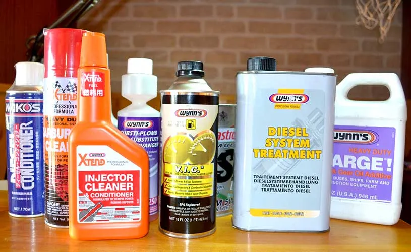
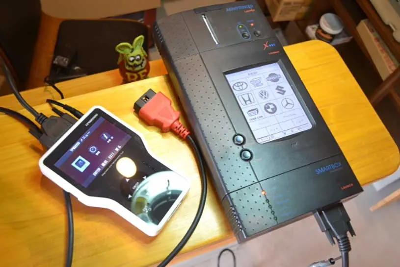

車検整備
過剰整備をなくす。
必要な整備を、
必要なタイミングで。
整備履歴を確認し、お客様のご要望とお財布にやさしい整備を心がけています。
 車検整備認証工場仙4-6522
車検整備認証工場仙4-6522
MAINTENANCE GUIDE
部品交換の目安
| 部品名 | 交換の目安 |
|---|---|
| ブレーキオイル | 2年〜4年毎 |
| トランスミッション | メーカー推奨の交換距離または必要時（異音・点検時）に確認 |
| デファレンシャルオイル | 必要時（異音・点検時）に確認 |
| エアークリーナーエレメント | 必要時（異音・点検時）に確認 |
| タイミングベルト | 100,000km毎 |
| 点火プラグ | 白金プラグ 100,000km／通常プラグ 必要時 20,000〜30,000km |
| 部品名 | 交換の目安 |
|---|---|
| エンジンオイル | 4,000km又は半年毎 |
| オイルフィルター | エンジンオイル交換2回に1回 |
| 冷却水 | 目安 50,000km または必要時（異音・点検時）に確認 |
| ベルト類 | 50,000km又は必要時 |
| バッテリー | 必要時 |
| タイヤ | スリップサインが出た時、又は表面劣化時（4〜5年位） |
CHEMICAL SUPPORT
各種ケミカル剤
愛車のコンディションをサポートします。

EQUIPMENT
システム診断機完備
最新のシステム診断機を完備。電子制御化が進む現在の自動車も、正確な状態を診断し、的確な整備につなげます。

BRANDS
取扱メーカー

※ロゴは旧公式サイトから回収したDEMO素材。公開時に各社の表記ルールと掲載可否を最終確認。